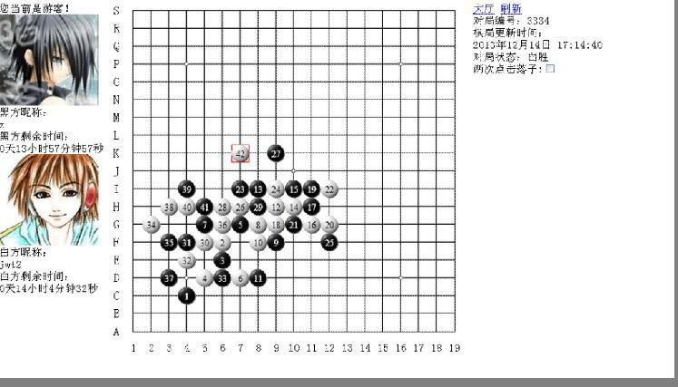
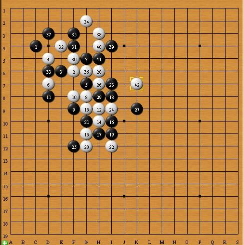

【暑假杯】 防守大战 一招妙手定乾坤
#1 【暑假杯】 防守大战 一招妙手定乾坤 作者：蓝天蓝 发表时间：2014-6-16 21:21:07
2013年暑假杯家族争霸赛2台选手对局晴空棋评
第13轮【讲五堂】 jwt2（假先胜）VS 【悠哉阁】z (黑)
http://game.freewzq.com/offlineDisplayGame.html?html=4321643&id=3334
防守大战 一招妙手定乾坤
时间：2013年12月14号 地点：新慢棋网
棋局总谱

1：【开局不慎】黑棋开局不慎。
实战图如下：

【讲五堂】 jwt2执黑先手下在C4,（这个点比C3有一些优势）。所以【悠哉阁】z选择交换。白棋2手落于F6（白棋的这个走法，前几盘出现过几次。）黑棋3手贴着白棋2手，防止白棋向外做棋，(见参考图一)。
参考图一如下：

如图所示，如果黑棋放任白棋向外做棋的话，黑棋讲相当被动。黑棋3手落在这里除了防止白棋向外做棋外，还与黑棋1手形成跳活二。白棋4手占住黑棋的活三点。(个人认为，如果让黑棋活三似乎也是可以的)。（见参考图二）。
参考图二（1）如下：

如图所示，白棋反先手之后，将黑棋包围。
［此帖子已被 蓝天蓝 在 2014-6-16 21:28:04 编辑过］
#2 Re:【暑假杯】 防守大战 一招妙手定乾坤 作者：蓝天蓝 发表时间：2014-6-16 21:26:25
参考图二（2）如下：
如图所示：白棋挡住黑棋的活三后，还是可以控制局面的。 2：【争夺外势】双方争夺外势。 实战图如下：
黑棋5手G7(主要担心白棋2手会向右边做棋。)白棋6手也担心黑3斜活二（见参考图三）。 参考图三如下：
如图所示，黑棋活二后，如果白棋应对不当的话，黑棋很可能就胜了。 白棋6手落在E7后，此时白棋有一个跳活二，和数个由此活二而产生的连攻。（见参考图四）。 参考图四如下：
如图所示：白棋活三后连攻胜。所以黑棋7手必须要挡一下。黑棋这个7手换个点，可不可以？（见参考图五）。 参考图五如下：
如图所示，黑棋挡在D8效果似乎会更好些。 黑棋在防守的同时，与黑5形成跳活二。所以白棋8手落于G8挡住黑棋的这个跳活二。黑9斜贴白8防止白棋斜活二。（见参考图六）。 参考图六如下：
如图所示，一旦白棋在F9形成双活二的话，黑棋就不好办了。


参考图七：

如图所示，白棋不防的话，黑棋成角进攻，对白棋的威胁也不大。
3：【以防争势】黑棋以防守争外势。
实战图如下：

白棋10手后，白棋的2个活二在D8能形成双活三。所以黑棋11手提前占住D8点。白棋12手向下活二，（见参考图八）。
参考图八如下：

如图所示，如果黑棋13手不防的话，白棋活三后连攻胜。
黑棋13手挡在I8(黑棋这样的话，白棋8——10手形成的活二就没法向右活三，同时还能限制白棋10——12手斜活二的作用。)（见参考图九）。
参考图九如下：

如图所示，黑棋13手能很大程度上限制住白棋的进攻。黑棋14手继续活二.(见参考图十)。
参考图十如下：

如图所示，白棋是想通过白14连攻。所以黑棋15手挡住白棋8-12这个活二。这样白棋一时就没办法连攻胜了。
同时黑棋这个15手还形成了一个跳活二。
4：【争夺先手】双方争夺先手。
实战图如下：
 白棋16手斜活二。（见参考图十一）. 参考图十一如下：
如图所示，如果黑棋活三的话，白棋顺势三三胜。 黑棋17手在挡住一个活二的同时，把白棋的其他的活二给隔离开来，使白棋不能形成有效进攻。 白棋18手活三，黑棋19手挡下面的同时黑棋反活三。白棋20手冲四的同时挡住黑棋的斜活二。白棋22这一手棋挡住黑棋2个活三。 5：【黑争外势】黑棋争外势。 实战图如下：
黑棋23手冲四。（估计黑棋当时只看到冲四后会有2个活二，这样容易做棋。而没有过多考虑白棋有个反活三和一个活二。主要是黑棋没想到白棋下面还有个活二。）黑棋25手被迫挡在下面，从而打乱了黑棋的进攻计划。（见参考图十二）。 参考图十二如下：
如图所示，如果黑棋在H7活三的话对白棋来说是很危险的。所以白棋26手提前占住H7. 黑棋27手挡住白棋冲四的同时外围做棋（见参考图十三）。 参考图十三：
如图所示，白棋不挡的话，黑棋连攻胜。 白棋28手以攻为守自己冲四的同时挡住黑棋的冲四点。 白棋30手目的是（见参考图十四）。 参考图十四：
| ||


6：【顶住压力】黑棋顶住压力。
实战图如下：

黑棋31手防止白棋向上冲四。白棋32手做棋（见参考图十五），
参考图十五如下：

如图所示，黑棋防错的话，白棋就简单胜了。黑棋33挡住白棋的冲四。白棋34手向上活三。黑棋35手挡中间。
7：【白棋妙手】白棋妙手做棋。
实战图如下：

白棋36冲四。38手后黑棋有一级连攻胜。为了挡住白棋的这个一级连攻胜，黑棋选择了点I4.（这成了黑棋速败的原因，因为黑棋下面还隐藏了一个冲四。）之后，白棋顺理成章冲四胜。
［此帖子已被 蓝天蓝 在 2014-6-16 21:33:19 编辑过］